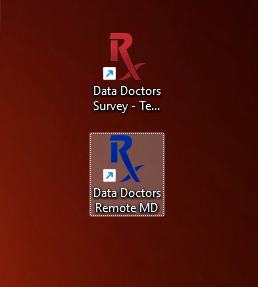
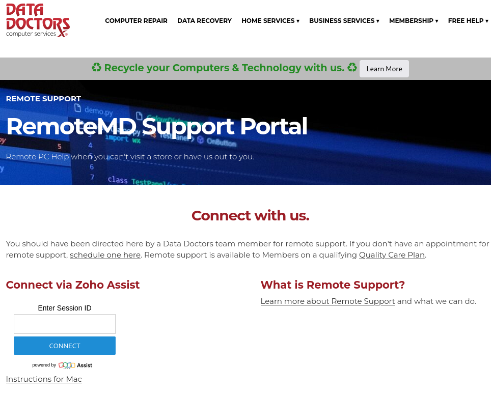
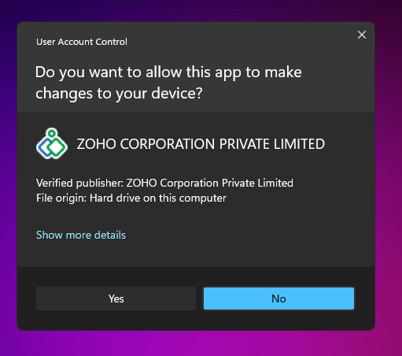
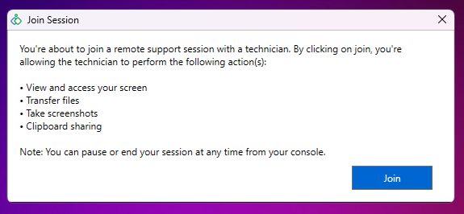

Naming Names
On the next page, there is a box for the client to enter their name. Go ahead and have them enter it, then click on the blue "Join Session" button.

Follow this interactive guide to get a client connected via Zoho Assist.
To begin, you'll need to navigate to the correct support page. Ask your client if they have a "Data Doctors RemoteMD" icon on their desktop -- it should have a blue "Rx" for an icon! If so, have them open up that shortcut, then continue on.

Verify that they are in the right place -- they should be at a Data Doctors (not Google, not Bing, not DuckDuckgo) webpage that says "Connect with us." in the center. If they appear to be at a search page, you can either have them try entering the URL again, and failing that, you may have to navigate them to the correct page manually.

Ask the client to open up their preferred web browser of choice. Once it's loaded, have them click into the address bar at the top of their window and enter the following URL: datadoctors.com/support and press Enter.
On the next page, there is a box for the client to enter their name. Go ahead and have them enter it, then click on the blue "Join Session" button.
At this point, the client should click on the blue "Agree and Download" button, which will download a file called "ZA_Connect.exe" -- if they are a bit click-happy, or have just had a remote session before, there may be a number trailing the file name, but it should not matter.
This is often the trickiest part of the connection process - be patient.


Your client should now see a Zoho window with a blue "Join" button in the bottom-right corner. Once they click on that, we should be connected!
